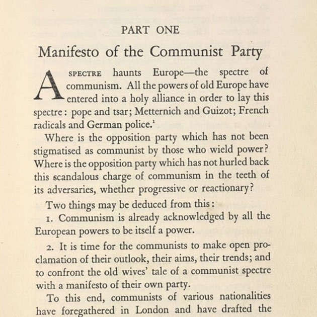

Paul McCartney
Beatle
Baixista
Baterista nos tempos livres
Gênio
Playboy
Filantropo
Beatle
Baixista
Baterista nos tempos livres
Gênio
Playboy
Filantropo
Principais Artigos
Sobre mim
Venho, por meio desse bird, expressar minha superioridade intelectual
Venho, por meio desse bird, expressar minha superioridade intelectual
-321
3
Maior susto
Ouvi um barulho horripilante mas era só os Rolling Stones na rádio
Ouvi um barulho horripilante mas era só os Rolling Stones na rádio
102k
70k
Ideia pro álbum
E se a gente criar uma banda fictícia pro nosso próximo álbum
E se a gente criar uma banda fictícia pro nosso próximo álbum
2k
1.2k
Página Inicial
 Comunicado
ComunicadoGeorge Harrison
Venho por meio desse comunicado informar a vocês, queridos colegas de trabalho, que vou me mudar para o himalaia e viver de meditação e chás de origens questionáveis
13k
5.1k
Feedback de fã
Fã número 29456
meuDEUséoJHOAAAAAAAAAAAAAAAANFLADKJ EUTEAMOCASAACOMIGOOOOOOOOOOADFMF MDFASÇDBFALSDKCNXZMVNBASKAAAAAAA...
Fã número 29456
meuDEUséoJHOAAAAAAAAAAAAAAAANFLADKJ EUTEAMOCASAACOMIGOOOOOOOOOOADFMF MDFASÇDBFALSDKCNXZMVNBASKAAAAAAA...
230k
120k
Fiz uma Música
Ringo Starr
Ringo Starr
0
0
A VERDADE
CONSPIRADOR
A VERDADE QUE PAUL MCCARTNEY E OS BEATLES TENTARAM ESCONDER PAUL MCCARTNEY MORREU NO DIA 6 DE NOVEMBRO DE 1966 E UM SÓSIA
CONSPIRADOR
A VERDADE QUE PAUL MCCARTNEY E OS BEATLES TENTARAM ESCONDER PAUL MCCARTNEY MORREU NO DIA 6 DE NOVEMBRO DE 1966 E UM SÓSIA
2M
1M
George na Web
Empresário e Coach da banda
Caros, por favor, ensinem o George a usar a internet melhor. Ele não pode ficar pegando stock photos para os posts dele, fere a imagem séria e profissional da banda
Empresário e Coach da banda
Caros, por favor, ensinem o George a usar a internet melhor. Ele não pode ficar pegando stock photos para os posts dele, fere a imagem séria e profissional da banda
250
302

Prox Música
Jonh Lennon
Gente, nós, enquanto músicos, temos que cumprir o papel social de desalienar a população e critiCAR O CAPITALISMO QUE OPRESSOR E O PATRIARCADO
Jonh Lennon
Gente, nós, enquanto músicos, temos que cumprir o papel social de desalienar a população e critiCAR O CAPITALISMO QUE OPRESSOR E O PATRIARCADO
71.3k
20k